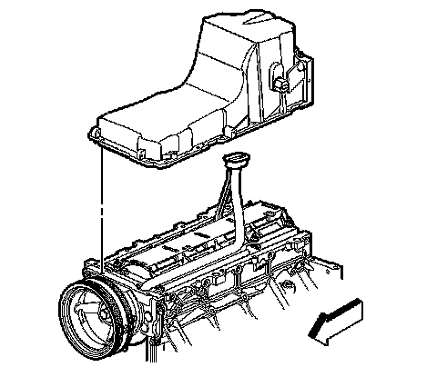

79. Oil Pan Installation
Oil Pan Installation
Important:
^ The alignment of the structural oil pan is critical. The rear bolt hole locations of the oil pan provide mounting points for the transmission housing. To ensure the rigidity of the powertrain and correct transmission alignment, it is important that the rear of the block and the rear of the oil pan are flush or even. The rear of the oil pan must NEVER protrude beyond the engine block and transmission housing plane.
^ Do not use the oil pan gasket again.
^ It is not necessary to rivet the NEW gasket to the oil pan.
^ It is not necessary to remove the oil level sensor prior to oil pan installation.
Apply a 5 mm (0.2 in) bead of sealant GM P/N 12378521 (Canadian P/N 88901148), or equivalent, 20 mm (0.8 in) long to the engine block. Apply the sealant directly onto the tabs of the front cover gasket that protrude into the oil pan surface. Refer to Sealers, Adhesives, and Lubricants.
1. Apply a 5 mm (0.2 in) bead of sealant GM P/N 12378521 (Canadian P/N 88901148), or equivalent, 20 mm (0.8 in) long to the engine block. Apply the sealant directly onto the tabs of the rear housing gasket that protrude into the oil pan surface.

Important: Be sure to align the oil gallery passages in the oil pan and engine block properly with the oil pan gasket.
2. Pre-assemble the oil pan gasket to the pan.
1. Install the gasket onto the oil pan.
2. Install the oil pan bolts to the pan and through the gasket.
3. Install the oil pan, gasket, and bolts to the engine block.
4. Tighten the bolts finger tight. Do not overtighten.
5. Place a straight edge across the rear of the engine block and the rear of the oil pan at the transmission housing mounting surfaces.
Notice: Refer to Fastener Notice.
6. Align the oil pan until the rear of engine block and rear of oil pan are flush or even.
1. Tighten the oil pan-to-block and oil pan-to-front cover bolts to 25 N.m (18 lb ft).
2. Tighten the oil pan-to-rear cover bolts to 12 N.m (106 lb in).
7. Measure the oil pan-to-engine block alignment (a).
1. Place a straight edge across the rear of the engine block and rear of oil pan at the transmission housing mounting surfaces.
Important: The rear of the oil pan must NEVER protrude beyond the engine block and transmission housing mounting surfaces.
2. Insert a feeler gage between the straight edge and the oil pan transmission housing mounting surface and measure to ensure that there is no greater than a 0.1 mm (0.004 in) gap between the pan and straight edge.
3. If the oil pan alignment is not within specifications, remove the oil pan and repeat the above procedure.

8. Install the oil level indicator switch.
Tighten the oil level indicator switch to 20 N.m (15 lb in).